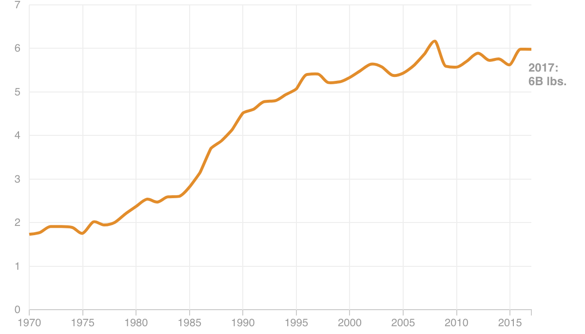

<% if (COPY.labels.headline) { %>
<%= COPY.labels.headline %>
<% } %> <% if (COPY.labels.subhed) { %>
<%= COPY.labels.subhed %>
<% } %>

<% if (COPY.labels.footnote) { %>
Notes
<%= COPY.labels.footnote %>
<% } %>